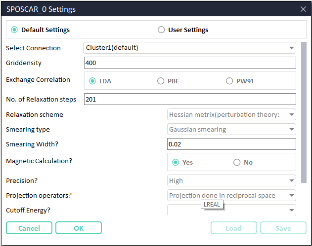

How to use Phonopy automatic module¶
Start from scratch.
Start with a blank template.
Phonopy from scratch using a structure file¶
Initiate Phonopy module: Phonopy module can be initiated from CASCADE toolbar by clicking XXX icon.
{kind=link}
Load the structure: browse the structure file from disk. In the current version of CINEMAS supported structure file formats are \(\texttt{POSCAR/*.vasp/*.cif/*.in/*.xsf}\).
Choose method/property for Phonopy run:

Fig. 41 Invoke Phonopy module, and choose mode.¶
Settings for input-files:
Fig. 42 Snapshot of window showing CINEMAS-default settings to prepare rest of the input files.¶
In Fig. 42, the first field is a list of established connections.
In ‘default’ mode workflow is submitted automatically to a connection marked as default in connection workspace.
In default mode, all the setting fields will be disabled and show parameters in ‘read-only’ mode.
Setting mode has to be changed to user mode to make customized settings.
In the user mode of settings, remote server can be selected from a list of established connections as show in the figure below.
As well as all the setting fields can be set to desired parameters.
Additionally Save and Load buttons are enabled, and can be used to save user-settings as a template or to load a saved one.
Automatic creation of workflows: - Workflows are created for the choice selected for method/property. - For DFPT method, a module with a single workflow is created.
For Finite-Difference method, a module with several(depending uplong supercell size) workflows is created.
Automatic submission and download:.
Once workflows created, CINEMAS submits the same to a remote connection marked as default in Connections workspace.
A different connection other than defult can be selected, as discussed in the previous step settings.
Phonopy post-processing:
Invoke Phonopy-post-processing workspace by clicking the incon XXX.
Select type of the calculation i.e. Band, DOS, or Band & DOS.
Click Run button, to run an instance of Phonopy program.
A success or an error message will be displayed above the Run button.
Just of the information both of the messages are shown together, in Fig. 46. In a real case, either of them will be displayed.
Run button exectues an instance of ‘phonoppy’ command.
View button shows a Matplotlib-graph (equivalent of adding an argument -p in command-line usage of Phonopy) using the output of Phonopy execution. However, this is a ‘view-only’ graph. See Fig. 47.
Load in CINEMAS button reformats the output(from YAML format by default or from HDF5 by choice) of the phonopy-execution and loads a formatted table and a graph into CINEMAS-plot. See Fig. 48.
The loaded graph in CINEAMS-plot, is further available for user-desired customizations, and to prepare and export a publication-quality figure.
View logs button opens the output logs of Phonopy program in a native application installed for text files.
{kind=link}
{kind=link}
{kind=link}
{kind=link}
{kind=link}
{kind=link}
Fig. 47 Matplotlib graph for phonon dispersion invoked from CINEMAS-GUI, similar to Phonopy command-line.¶
{kind=link}
Fig. 48 CINEMAS-Phonopy GUI: A one-click extraction of tabular-data and graph from Phonopy output.¶
Generation of coordinates and labels of high-symmetry points:
Especially for phonon bandstructure, there are three modes to provide coordinates of high-symmetry points in the Brillouin zone, Manual, Pymatgen-auto, and Phonopy-auto. In the Manual mode, the user has to provide coordinates and labels of each high-symmetry point to be considered in the Phonopy calculation. In Cinemas-auto mode coordinates and lables of high-symmetry points are generated by Pymatgen package and shown in the Phonopy-postprocess workspace, while for Phonopy-auto mode this is done by Seekpath program, which is the original behavior of command-line Phonopy.